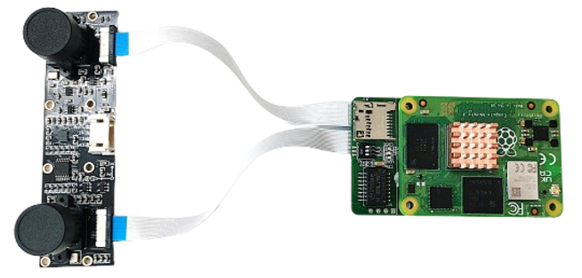
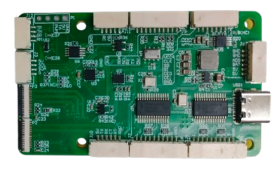

RflyPilot v2.0 Beta
RflyPilot v2.0 Beta 在上一版RflyPilot v1.3 (Release) 硬件基础之上进行了重大更新，“计算机视觉在火星！”。
软件更新
- 增加对新款磁力计芯片QMC5883P的驱动支持，最高可达500Hz采样率。
- 增加对双目视觉摄像头的驱动支持。
拓展板更新
- 增加双目视觉接口(Dual-CSI),避免传统USB方案性能较低的问题。
- 增加对QMC5883P磁力计的支持。
- 增加额外的SPI接口，实现对多IMU的支持。
- 增加以太网口的支持(4Pin)。
- 增加散热风扇接口。
- 增加独立的DC-DC稳压器支持。

